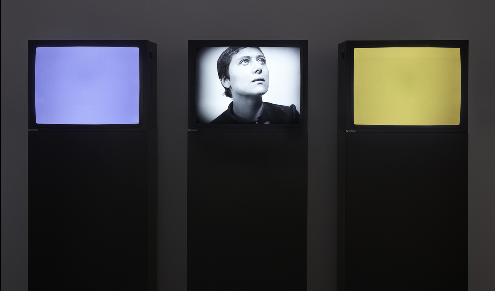
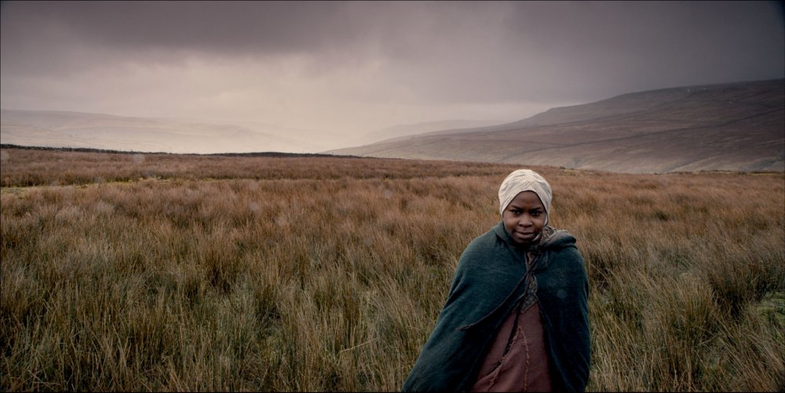
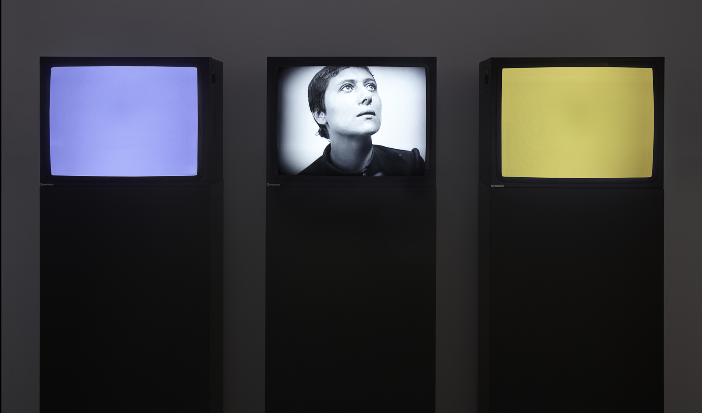
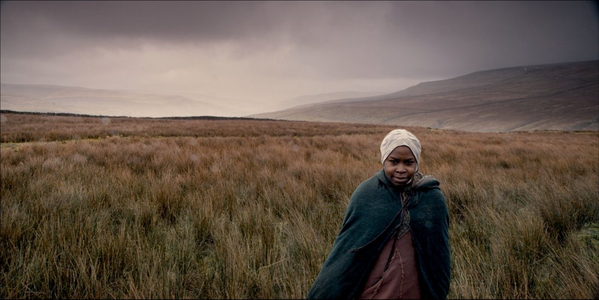

A celebrated artist, filmmaker, lecturer, and writer, John Akomfrah, OBE, explores the complexities of the African Diaspora in Europe through his lush, lyrical films. He is considered a seminal figure in black British film. Among his numerous awards is the Taipei Golden Lion. He is particularly interested in highlighting the individuals affected by the Diaspora and the trauma caused by their displacement. Through his films, Akomfrah aims to fill in what he sees as voids in this history, and he often begins his work with archival research. Among his recent works is Tropikos (2014), a video focused on waterways and their connection to the slave trade. Akomfrah was also one of the co-founders of the Black Audio Film Collective (founded in 1982), which was formed to give other artists the opportunity to realize their projects. John Akomfrah’s Purple (2017) is widely considered the British artist and filmmaker’s most ambitious work to date. The immersive 6-channel video installation was filmed across 10 countries, exploring the incremental and interconnected effects of climate change on a global scale. “Purple has grown out of a series of frustrations and dissatisfactions,” Akomfrah said in an interview with ICA Boston. “This is not the 18th century anymore—it’s not unlimited landscapes and unlimited space to explore ad infinitum, wasting away, trashing away as we go along.” As the work unfolds, lush, cinematic shots of landscapes altered by climate change are cut together with archival footage, spoken word, and music. This bricolage style of remixing is distinctive to Akomfrah and fellow members of the Black Audio Film Collective. Described by the artist as “a person of color’s response to the Anthropocene,” Purple is a continuation of his recent investigations into the way colonialism and the African diaspora relate to natural history. Other such works include his Vertigo Sea (2015) and Tropikos (2016). “Climate change…is not just a white, European fixation, though it is often presented that way,” Akomfrah explained in a 2017 interview with TheGuardian. “When I stand on a street in Accra, I can feel that it is a city that is literally at boiling point. It is way hotter than it was in the 1960s or even the 1980s. We need to start looking at climate change in radically different ways, not just as part of a western-based development narrative.” Purple debuted at London’s Barbican, traveled to ICA Boston, and was the opening work at the landmark exhibition“The Coming World: Ecology as the New Politics 2030–2100” at Moscow’s Garage Museum of Contemporary Art in 2019. The workdemonstrates the overwhelming scope and real impact climate change is having on a planetary scale.